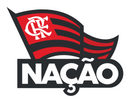
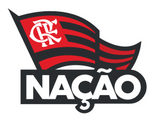

Gabriel_Barbosa (Passe o mouse)
Mais conhecido como Gabigol, é idolo da torcida do Flamengo, autor dos 2 gols que deu ao mais querido o titulo da Libertadores. O BI que nao vinha a 38 anos. foi artilheiro, com 9 gols. O ano foi suficiente para se tornar um dos maiores ídolos da história do clube.